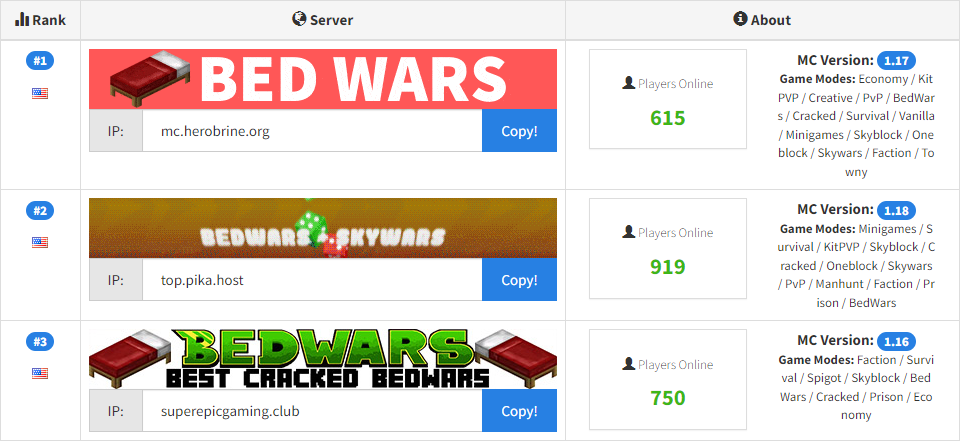
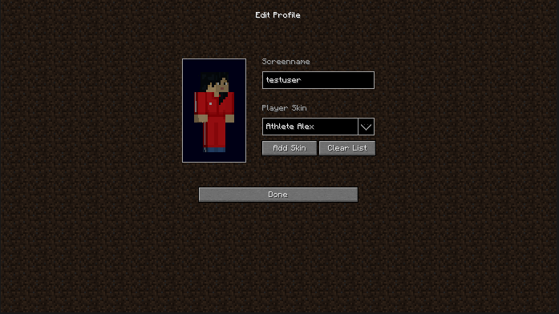
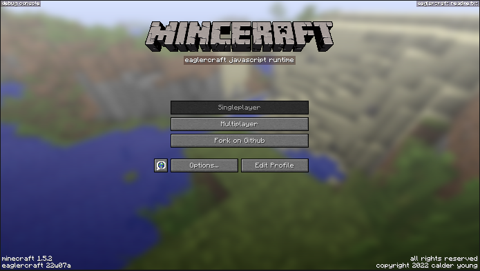
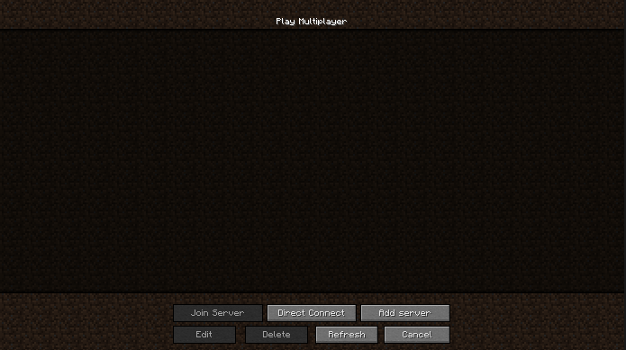
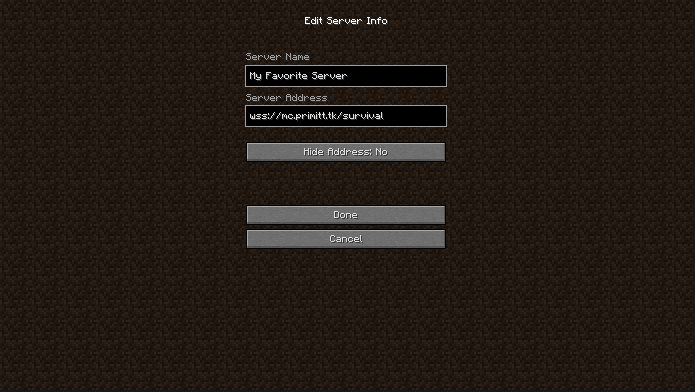
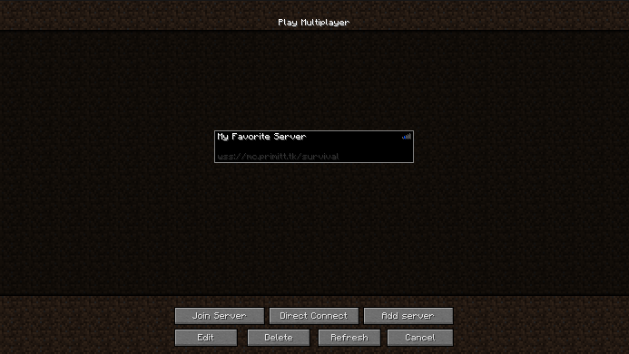
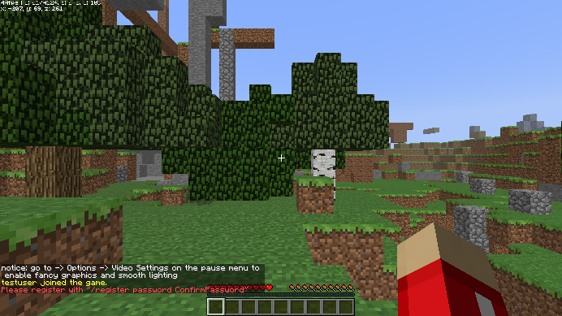

Play Multiplayer
Most of the steps to join a server and play multiplayer are the same between the regular/launcher version of Minecraft and Eaglercraft. If you already have a Minecraft account, or if you lost it and can't login for whatever reason, you might want to download a custom launcher like SKLauncher and play online on unofficial servers.
1. Find a Server
You can find Eaglercraft servers on Google, probably. For other Minecraft versions, search for unofficial servers.
You'll find a list of several kinds of servers to choose from. The most popular kinds are PvP, or player vs player, where you compete against other players.

2. Copy the Server's Address
Choose a server you like and then copy its address, or IP address. The address can be numbers, letters, or both. To copy it, you can either click on a box next to the address, or highlight the address and then press CTRL + C (Windows/Linux) or CMD + C (macOS).
In Eaglercraft, you'll need to enter the server in the format wss://ipaddress.
3. Launch Minecraft Multiplayer
Eaglercraft requires you to setup your profile before joining a server. Enter a username, choose or upload a skin, and then click Done.

From the main menu, click on Multiplayer.

4. Add a Server
Click on Add Server.

Here you can enter anything you want for the Server Name. However, you need to enter the Server Address that you copied earlier. You can paste it by pressing CTRL+V (Windows/Linux) or CMD+V (macOS).

5. Join a Server
Click on the server you just added and then click Join Server.

6. Register Your Account on the Server
Most servers will require you to register an account before you can play. Typically, the registration command is /register password confirmpassword. Press T, type the command, and press Enter to run the command.
Once you've registered, run the command /login password to login. Now you can start playing.
Another useful command is /help to learn more about the server, including other commands. You can also press T to chat with other players.
